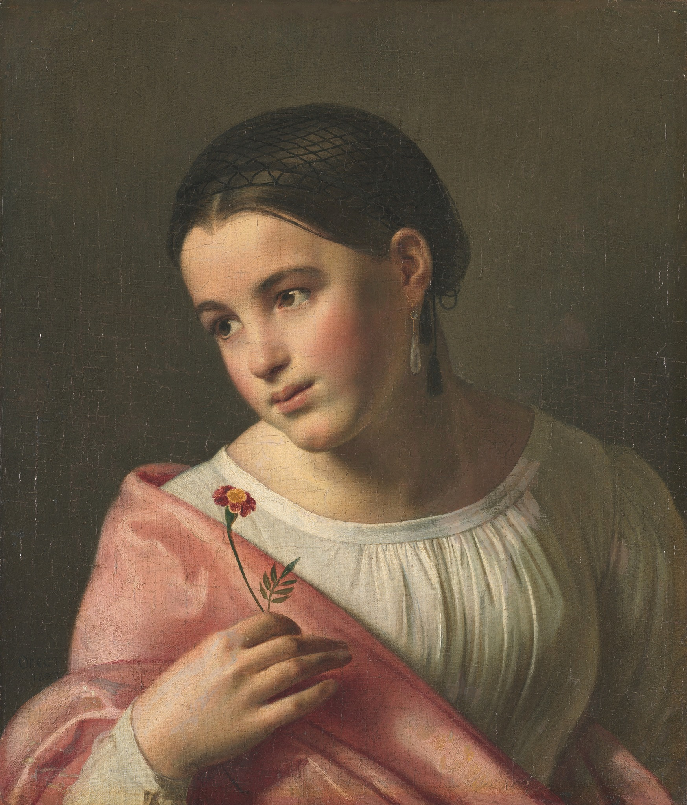

Кипренский Орест Адамович
Бедная Лиза
Картина написана на сюжет повести Н.М.Карамзина "Бедная Лиза" (1792), с восторгом
встреченной публикой. В основе повести тема, чрезвычайно популярная в литературе сентиментализма: трогательная и
трагическая история юной, чистой душой девушки из поселян, соблазненной молодым дворянином. Слова Карамзина "и
крестьянки любить умеют" стали девизом целого поколения просвещенной дворянской молодежи. Повесть воспринималась
как быль. Окрестности московского Симонова монастыря и место гибели героини, "Лизин пруд", стали надолго местом
паломничества образованной публики. Кипренский как бы возвращается к образности эпохи сентиментализма.
Художественный язык прост, но символически насыщен. Сочетание розового и белого в одежде героини означает чистоту
и свежесть юности, гвоздика в ее руке – нежную искреннюю любовь. Однако Кипренский, будучи человеком другого
поколения, уже не мог вполне ощутить наивную трепетность чувств прошедшей эпохи, и его картина приобретает
классицистический холодноватый блеск